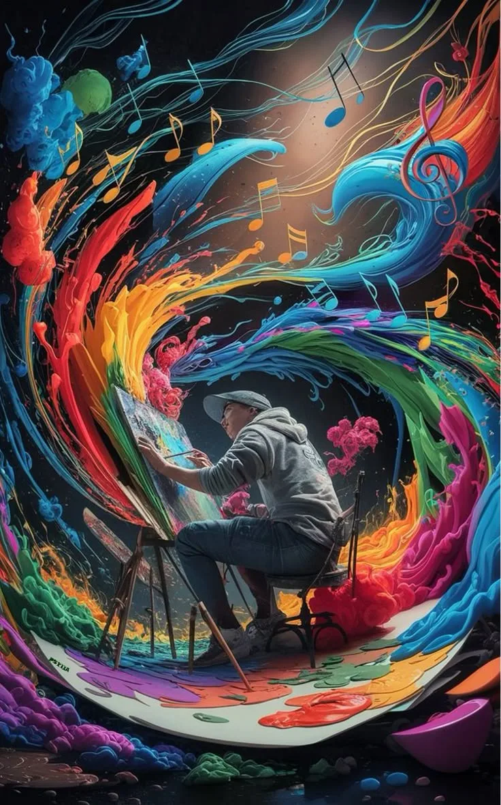
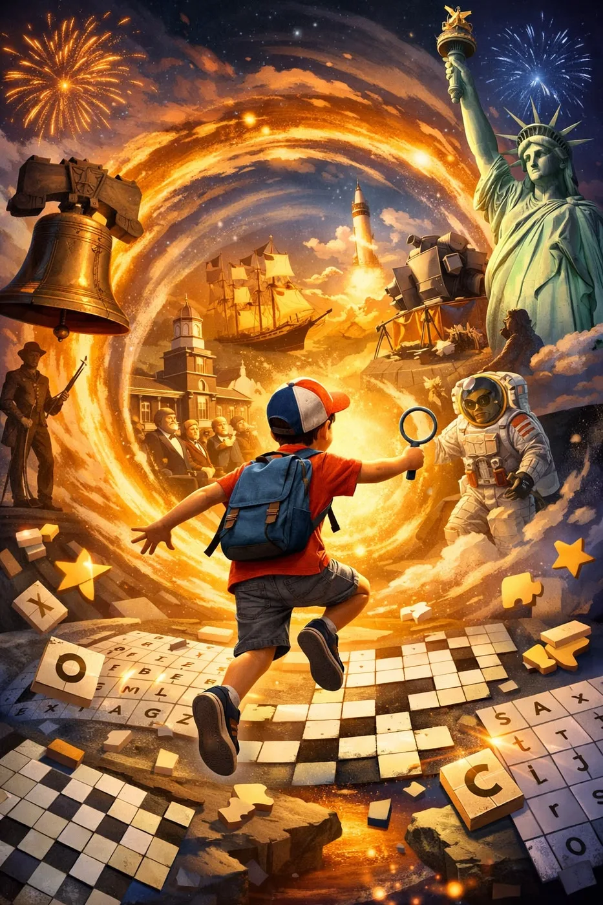
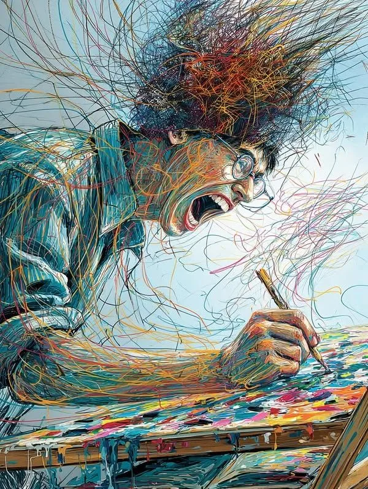
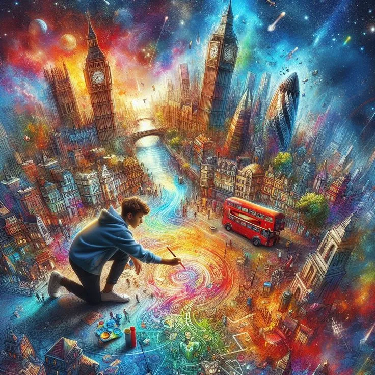

El programa para despertar tu creatividad — diez módulos, un hábito, ideas que se vuelven reales.
Entrar a WAKE UP ✦© CREATV MYNDZ · Página de prueba — nada de esto es definitivo.
✦ Lo que los creativos no te cuentan
El programa para despertar la creatividad que ya vive en ti — y convertirla en cosas reales.
Diez módulos, una tarea por módulo y cero teoría vacía. Cada uno desbloquea el siguiente: no se trata de aprender más, sino de volver a crear.
Sigue bajando. Te la vamos a despertar.




✦ WAKE UP · Una mente, infinitas escenas
De una sola chispa salen todas las escenas. La misma cabeza que hoy no se le ocurre nada es la que, con un hábito, no para de crear.
✦ Lo que es posible
Cuando terminas un módulo no terminas una clase: sumas un hábito. Diez de esos, uno detrás del otro, y crear deja de ser algo que "te pasa" para ser algo que haces.
Una idea al año es suerte. Una idea a la semana es un sistema.
Solo ves lo que creas — nunca lo que no. Mueve los controles: esto es lo que sale de un hábito chiquito, pero sostenido.
Hacia dónde vas
Ideas que capturas (anotadas, no solo pensadas) por cada hora que creas.
Sé honesto — este es el número contra el que nos vamos a comparar.
Tu potencial creativo
—
horas creando · en 6 meses
Lo que no estás contando: — horas al mes
Eso es lo que se te va cada mes que esperas — invisible, porque nunca ves lo que no creas.
Estimaciones para inspirar, no promesas — lo único garantizado es lo que hagas.
Empezar WAKE UP ✦El programa para despertar tu creatividad — diez módulos, un hábito, ideas que se vuelven reales.
Entrar a WAKE UP ✦© CREATV MYNDZ · Página de prueba — nada de esto es definitivo.